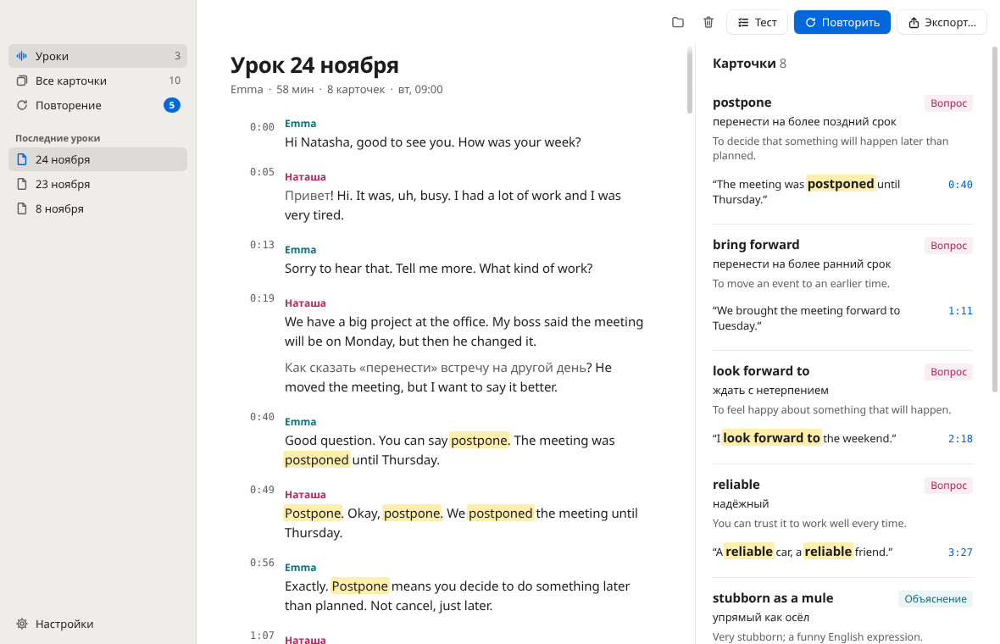
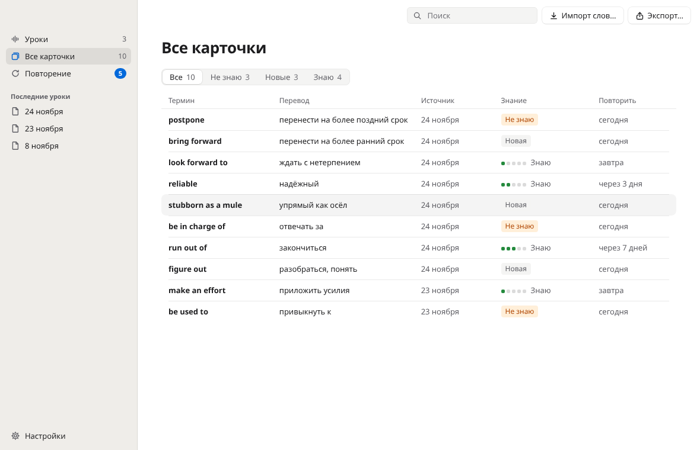
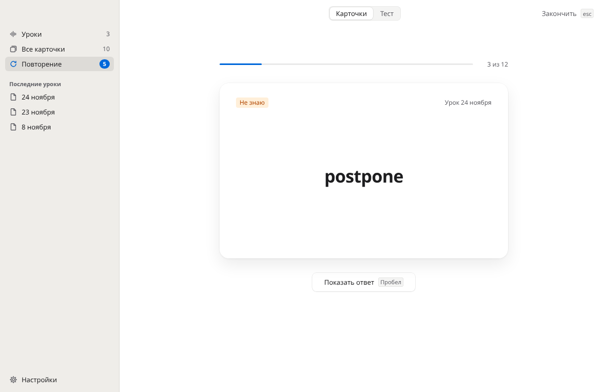
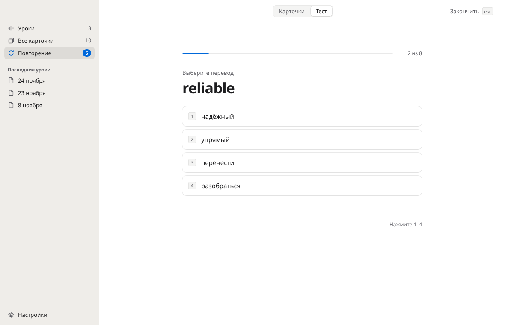

Для Mac на Apple Silicon
Урок английского становится карточками
Lesson Cards записывает ваш урок в Google Meet или другом приложении для звонков, расшифровывает его на Mac и собирает карточки из слов, которые прозвучали на уроке.

Как это работает
Запись
Две дорожки: ваш голос и голос учителя. Запись идёт из Google Meet или другого приложения для звонков.
Расшифровка
Речь превращается в текст прямо на вашем Mac.
Карточки
В каждой карточке есть перевод, объяснение и пример из вашего урока.
Карточки с моментом из урока
Слова в расшифровке подсвечены. У каждой карточки есть пример из урока с временем, когда это прозвучало.
Слова можно взять и с экрана: нажмите ⌥S, и Lesson Cards возьмёт слова из субтитров.

Повторение и тест
Откройте карточку и отметьте «знаю» или «не знаю». Приложение повторяет слова с интервалами: то, что вы не знаете, возвращается раньше.
Для проверки есть тест с тремя типами вопросов: выбрать перевод, ввести слово и вставить пропущенное слово во фразу из урока.


Свои слова и экспорт
Импорт
Загрузите список слов из PDF, CSV, XLSX и похожих файлов, и он станет карточками.
Экспорт
Карточки можно выгрузить в Quizlet и в Anki.
Приватность
Звук урока не покидает ваш Mac.
- Расшифровка работает локально на компьютере.
- В OpenAI уходит только текст, чтобы сделать карточки.
- Нужен ваш собственный ключ OpenAI. Он хранится у вас на Mac.
Скачать
Требования
- Mac с чипом Apple Silicon
- macOS 14.4 или новее
- Ключ OpenAI
Установка
- Откройте файл Lesson-Cards-arm64.dmg.
- Перетащите Lesson Cards в папку «Программы».
- Откройте приложение. Когда оно попросит, разрешите доступ к микрофону, системному звуку и экрану.
- В «Настройках» вставьте ключ OpenAI.